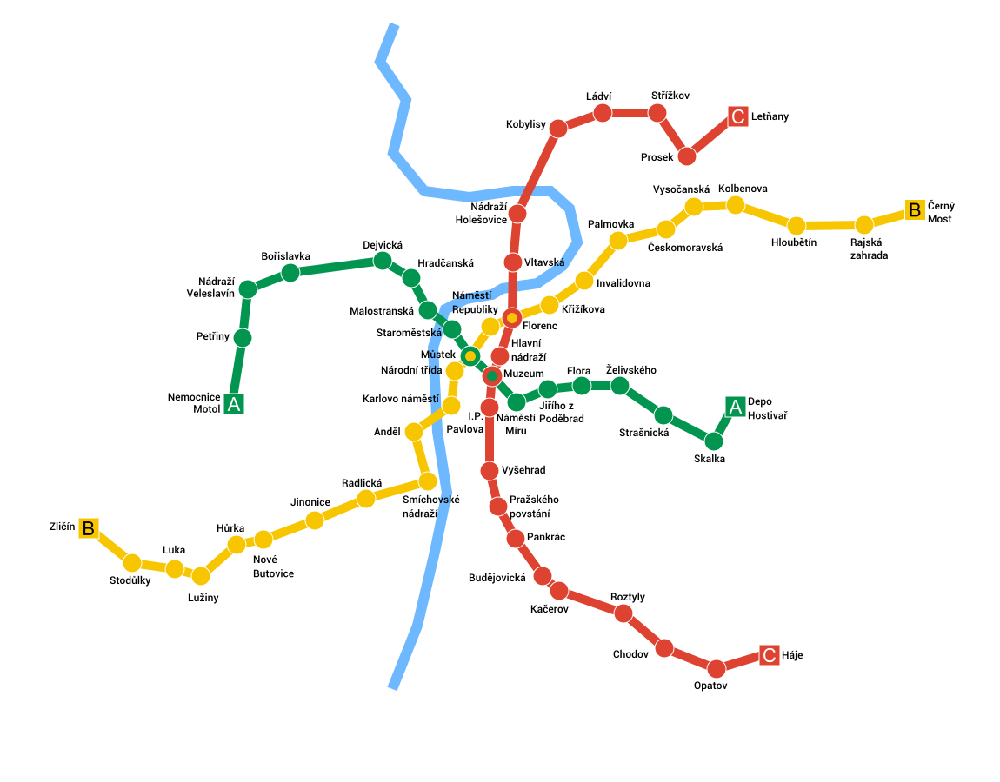

Úvod
O Pražském metru
Pražské metro je systém rychlé dopravy sloužící obyvatelům a návštěvníkům hlavního města České republiky, Prahy. Bylo otevřeno v roce 1974 a od té doby se stalo klíčovou součástí městské infrastruktury.
Metro v Praze má několik linek, které propojují různé části města a umožňují snadnou a efektivní přepravu cestujících. Každá linka je označena barevně a číslem, což usnadňuje orientaci.
Na této stránce se dozvíte více o historii pražského metra, jeho provozu, trasách linek a další zajímavosti spojené s tímto významným dopravním prostředkem.
Mapa linek
Níže si na obrázku můžete prohlédnout mapu všech tří linek. Aktuálně je ve výstavbě i čtvrtá linka, která bude spojovat jižní část města s centrem. Předpokládaný termín otevření je rok 2029.
Zajímavosti
-
Historie: Otevřelo se v roce 1974 a bylo prvním metrem ve východní
Evropě. Jeho výstavba byla úžasným inženýrským úspěchem, zejména
kvůli podzemnímu prolomení Vltavy a stavbě stanic s moderním
designem.
- Otevření linky A: 1985
- Otevření linky B: 1978
- Otevření linky C: 1974
- Stanice jako galerie: Mnoho stanic metra v Praze je považováno za galerie moderního umění. Každá stanice má svůj vlastní charakteristický design, který se často mění podle uměleckých projektů.
- Signálkový systém: Pražské metro používá moderní systém automatického řízení vlaků, který umožňuje krátké intervaly mezi jednotlivými spoji a vysokou přesnost při příjezdu a odjezdu vlaků.
- Provoz a rozsah sítě: Síť metra má tři linky (A, B, C) a celkem 61 stanic, což z něj činí efektivní způsob přepravy v rámci Prahy.
- Architektura stanic: Stanice metra v Praze jsou architektonicky pestré. Některé jsou zdobeny mozaikami, jiné mají moderní minimalistický vzhled, ale každá má svou vlastní atmosféru.
- Rozšíření sítě: Plánují se rozšíření a nové linky, které by měly zlepšit propojení mezi různými částmi města a snížit dopravní zácpy.
- Efektivita a spolehlivost: Pražské metro je obecně považováno za spolehlivý a efektivní způsob přepravy. Většina lidí v Praze využívá metro jako jeden z hlavních prostředků hromadné dopravy.